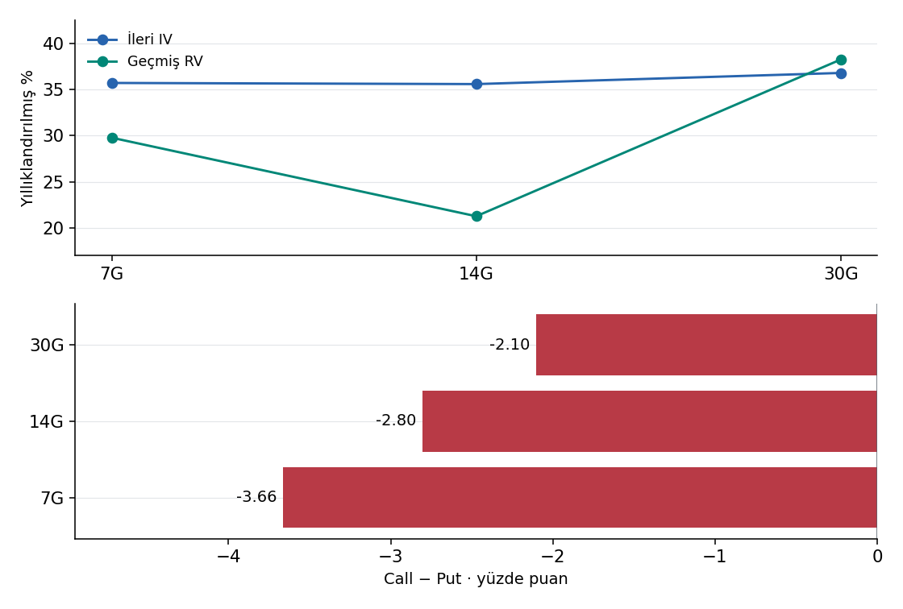
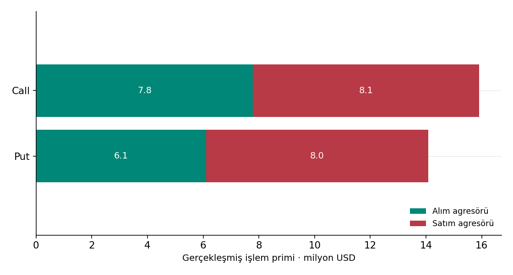
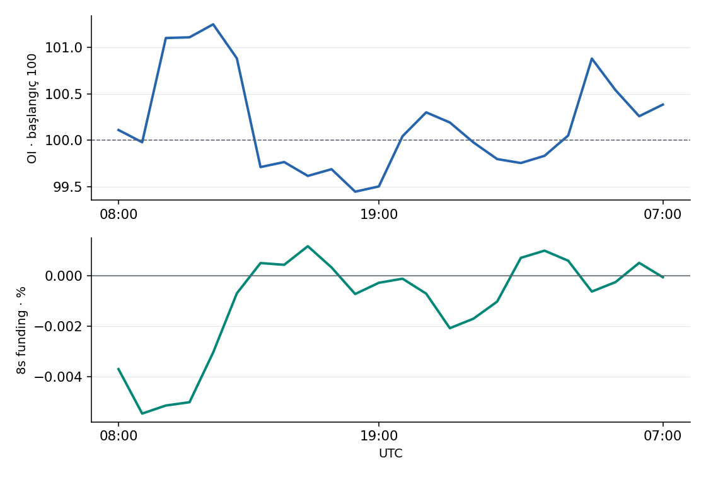
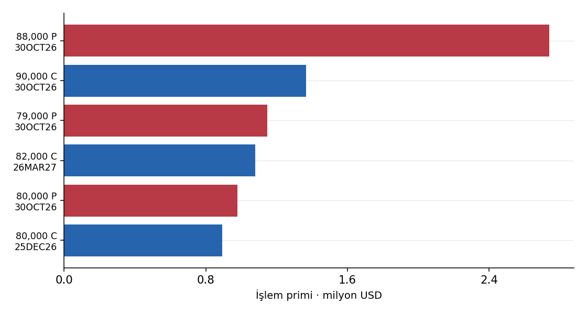

BTC Sabah Opsiyon Notu
Bugunun rejimi: Kontrollu ama kirilgan. Genel gamma yapisi tampon uretmeye devam ediyor, ancak on vadedeki zayiflama nedeniyle denge bozulursa hareket hizlanabilir.
Risk asimetrisi: Yalniz bu stok verilerinden bir yonun daha kolay gerceklesecegi kanitlanamaz.
Yukari teyit: Yukari kaynak dugumleri: 88,000 -> 90,000 -> 95,000. Fiyat hedefi garantisi yok.
Asagi tetik: Asagi kaynak dugumleri: 84,000 -> 83,000. Bant siniri bir gamma-flip hesabi degildir.
Tek cumlelik masa notu: 84,000-88,000 pozitif dugum yogunlugu; merkez 86,000. Ic negatif dugumler bulunabilir. 09OCT26 RR (call IV - put IV) -4.99. Put IV call IV uzerinde. Seviye ve zaman icindeki degisim ayridir.
Vade kaynagi: deribitGEX kaynagi: deribitLaevitas API: 21Public veri: 1
Üretim zamanı 2026-10-08 10:09 TSİTürev verisi ana rapora ne katıyor?
Oynaklık ve kaldıraç aynı yönde teyit vermiyor.
Rapordaki spot 82,928; seçili GEX düğüm bandı 84,000–88,000; spot bandın altında. İşlem akışı bu seviyelerin çalışacağını kanıtlamaz; fiyatın tepkisi ayrı teyittir.
- Son 7G oynaklığı %29.8; 30G %38.2. Yakın hareket daha sakin. 7G opsiyon fiyatlaması %35.7; geçmiş 7G'den +5.9 puan farklı.
- Call alım−satım primi -0.34 milyon USD; put alım−satım primi -1.89 milyon USD. İki tarafı ayrı görmek, toplam call payını yükseliş bahsi sanmayı önler. Agresör yönü tek başına tüm stratejinin yönü değildir.
- Binance BTCUSDT açık pozisyonu %+0.38; son 8s funding %-0.0001. Pozisyon büyüyor; bu, spot alıcı gücünü tek başına göstermez. Aynı dönemde gözlenen long/short tasfiyesi 49.64/3.55 milyon USD; piyasa toplamı değil.
Teyit koşulu: Yukarı okuma: fiyatın rapordaki yukarı düğümleri aşması ve call alım fazlasının sürmesi birlikte izlenir. Aşağı risk: alt düğümlerde fiyat kaybı ile long tasfiyesi/put talebinin birlikte güçlenmesi. Bunlar takip koşullarıdır; gerçekleşmiş teyit veya olasılık değildir.
Fiyatlama ve işlem görselleriCekirdek Rapor
Bu ust bolum yalnizca savunulabilir katmanlari tutar: seviyeler, expiry destegi, GEX yapisi, opex gecisi ve gunluk risk migrasyonu. Ham tape, behavioral ve proxy bloklari appendix kismina alinir.
Gunluk Oyun Plani
- Denge senaryosu: 84,000-88,000 yogunluk bolgesi; 86,000 merkezine yaklasma izlenir.
- Yukari senaryo: 90,000 ilk ust dugum; sonraki kaynak seviyesi 95,000. OI artisi tek basina alis teyidi degildir.
- Asagi senaryo: 84,000 altinda sonraki negatif dugum 83,000. Bant kirilimi tek basina dealer rejimi degistirmez.
Yesterday vs Today:
ANA SEVIYELER VE OKUMALAR
Pozitif GEX yogunluk bolgesi 84,000-88,000. Bolgenin icinde negatif dugumler bulunabilir; bu bir kesintisiz pozitif gamma veya gamma-flip hesabi degildir.
Balance: 86,000 (guclu)
UPSIDE TEST: 88,000 -> 90,000 -> 95,000
DOWNSIDE TEST: 84,000 -> 83,000
84,000 alti icin sonraki kaynak dugumu: 83,000.
Tetik Haritasi
Squeeze trigger: 90,000
Sonraki yukari dugum: 95,000
Breakdown trigger: 84,000
Sonraki asagi dugum: 83,000
Reject above: 88,000
Reject below: 84,000
BTC Türev Piyasası · Fiyatlama ve İşlem Haritası
Oynaklık ve kaldıraç aynı yönde teyit vermiyor.
Hangi vade neyi fiyatlıyor?

Call ilgisi alım mı, satım mı?

Hareket kaldıraçla mı büyüyor?

İşlemler hangi kontratlarda yoğun?

Saatlik opsiyon akış çizgisi gösterilmiyor: provider saat etiketleri istenen dönemle örtüşmüyor. Grafik toplamları alternatif call/put işlem endpoint’iyle uzlaştırıldı; saatler elle kaydırılmadı. Tam piyasa kapsamı teyitli değil.
Ölçümler, tarihler ve kaynak kapsamı
Aynı Ufuklu Volatilite ve Gerçek İşlem Akışı
7G opsiyon IV’si 35.70%, geride kalan 7G RV 29.78%; fark 5.92 puan. Bu geçmiş harekete göre prim farkıdır, gelecek volatilite veya al/sat sinyali değildir.
Güncel kaynak · Gözlem: 2026-10-08T07:07:00+00:00 · Alınma: 2026-10-08T07:09:05.436667+00:00
| Ufuk | ATM IV | Geçmiş RV | IV − RV | 25 delta RR · Call − Put |
|---|---|---|---|---|
| 7G | 35.70% | 29.78% | 5.92 pp | -3.66 pp |
| 14G | 35.58% | 21.30% | 14.28 pp | -2.80 pp |
| 30G | 36.78% | 38.23% | -1.45 pp | -2.10 pp |
RV fiyat kaynağı / son kapanış: binance_BTCUSDT_close / 2026-10-08T00:00:00+00:00
IV ileri vade, RV aynı uzunluktaki geçmiş dönemdir. İkisi % yıllıklandırılmıştır; fark yüzde puanıdır. RV yalnız tamamlanmış günlük gözlemlerle hesaplanır. Sabit vadeli IV kaynak interpolasyonudur; uç vadelerde düz ekstrapolasyon mümkündür. RR = call IV − put IV; pozitif değer call primidir.
Gerçekleşmiş opsiyon işlemleri · Deribit BTC
Güncel kaynak · Gözlem: 2026-10-08T07:00:00+00:00 · Alınma: 2026-10-08T07:09:05.872263+00:00
2026-10-07T07:00:00+00:00 → 2026-10-08T07:00:00+00:00
- Gözlenen işlem
- 8,716
- İşlem primi · USD
- 29,991,178.06
- Call prim payı
- 53.05%
- Buy − Sell · USD
- -2,226,194.12
- Block işlem primi · USD
- 14,469,196.12
Bu OI değişimi değil, işlem kayıtlarının kaynak özeti. Buy/sell kaynak sınıflamasıdır; call hacmi tek başına yükseliş pozisyonu değildir. Çok bacaklı strateji ve tam piyasa kapsamı teyit edilmedi.
Kaldıraç bağlamı · Binance BTCUSDT
Güncel kaynak · Gözlem: 2026-10-08T07:00:00+00:00 · Alınma: 2026-10-08T07:09:06.295193+00:00
2026-10-07T07:00:00+00:00 → 2026-10-08T07:00:00+00:00
- OI değişimi · eşleşmiş dönem
- 0.38%
- 8 saatlik funding · son gözlem
- -0.0001%
- 8 saatlik funding · 24s gözlem ortalaması
- -0.0011%
Güncel kaynak · Gözlem: 2026-10-08T07:00:00+00:00 · Alınma: 2026-10-08T07:09:06.871459+00:00
- Gözlenen long tasfiyesi · USD
- 49,637,730.43
- Gözlenen short tasfiyesi · USD
- 3,547,059.07
Funding gözlem oranıdır, ödenen fonlama toplamı değildir. Pozitif funding genellikle long tarafının maliyetidir; OI artışı tek başına long açılması demek değildir. Tasfiye tutarları bulunan Binance BTCUSDT kayıtlarıyla sınırlı alt sınırdır; tüm piyasayı kapsamaz. Deribit tasfiye kapsamı desteklenmiyor.
Provider tam tasfiye kapsamı sertifikası vermiyor.
Analitik kanitlar ve arastirma detaylari
Davranissal Akis Avantaji
Kalabalik sinyali: Retail-benzeri gec put panigi
Fade mi Follow mu?: Spot kirilim seviyesinin altinda kabul gormeden asagi panigi fade et
Guven duzeyi: Orta
- Kalabalik kovalama skoru -5: Retail-benzeri gec put panigi.
- Fade mi Follow mu?: Spot kirilim seviyesinin altinda kabul gormeden asagi panigi fade et.
- Kisa vadeli put talebi dususun arkasindan geliyor gibi duruyor. Bu akisin buyuk kismi gec hedge ise, 84,000 alti kalici acceptance gelmeden asagi follow-through sinyali tek basina guclu sayilmaz.
Bu skor neden boyle cikti:
- Put/Call dengesizligi (-2): Put eklenmesi call eklenmesinden belirgin guclu.
- Spota gore strike konumu (-2): Baskin yeni risk spotun altindaki put strike'larinda birikiyor.
- Premium stresi (-1): Opsiyon primi pahali ve put tarafi panige daha yakin.
- Skew stresi (+0): Skew tarafinda asiri tek yonlu baski yok.

Bu grafik skorun hangi bilesenlerden geldigini gosterir; yani sinyalin sadece tek bir etiketten ibaret olmadigini aciklar.

Bu grafik kalabaligin gec put panigi mi yoksa gec call kovalamasi mi yaptigini zaman icinde daha net okumayi saglar.
Sabah Masa Notu
84,000-88,000 pozitif dugum yogunlugu; merkez 86,000. Ic negatif dugumler bulunabilir. 09OCT26 RR (call IV - put IV) -4.99. Put IV call IV uzerinde. Seviye ve zaman icindeki degisim ayridir.
Katmanli Teyit
Short/devam setup'i var ama teyit eksik
Beklenen aksiyon: Short / defensive taraf daha agir; destek alti kabul gelmeden yine de kovalamak yerine teyit ara.
| Katman | Long | Short | Okuma |
|---|---|---|---|
| Teknik ekstrem | 0 | 0 | RSI(14) 41.8: teknik ekstrem net degil. |
| Vol tepkisi | 0 | 1 | IV-RV spread +11.47: hareket korkuyla fiyatlaniyor, dusus teyidi daha guclu. |
| Skew tepkisi | 0 | 1 | 25d RR -4.39 puan daha savunmaci; skew rahatlamiyor. |
| Positioning filtresi | 0 | 1 | Spot denge bandinin altinda / gamma kirilgan; positioning downside devamini daha kolay aktive ediyor. |

Geçmişte Ne Demişti?

BTC fiyatı üzerindeki işaretler katmanlı teyidin o gün long, short veya nötr tarafa eğildiğini gösterir. Alt panel long-short skor farkını izler.
Son 7 gün katmanlı teyit
| Tarih | Bias | Karar | Long | Short | Net |
|---|---|---|---|---|---|
| 2026-10-02 | Short adayi | Short/devam setup'i var ama teyit eksik | 1 | 3 | -2 |
| 2026-10-03 | Nötr / karisik | Net setup yok / boyut kucult | 2 | 2 | +0 |
| 2026-10-04 | Short adayi | Short/devam setup'i var ama teyit eksik | 0 | 2 | -2 |
| 2026-10-05 | Nötr / karisik | Net setup yok / boyut kucult | 1 | 1 | +0 |
| 2026-10-06 | Short adayi | Short/devam setup'i var ama teyit eksik | 0 | 3 | -3 |
| 2026-10-07 | Short adayi | Short/devam setup'i var ama teyit eksik | 0 | 3 | -3 |
| 2026-10-08 | Short adayi | Short/devam setup'i var ama teyit eksik | 0 | 3 | -3 |
Bu tablo son günleri net gösterir; grafikteki legend tüm tarih aralığında görülen sinyal tiplerini anlatır.
Bu Setup Neyi Arar?
- RSI(14) 41.8: teknik ekstrem net degil.
- Bollinger/z-score tarafinda fiyat orta bolgede; band ici davranis daha baskin (band %26).
- IV-RV spread +11.47: hareket korkuyla fiyatlaniyor, dusus teyidi daha guclu.
- 25d RR -4.39 puan daha savunmaci; skew rahatlamiyor.
- Spot denge bandinin altinda / gamma kirilgan; positioning downside devamini daha kolay aktive ediyor.
Teknik referans: Bollinger alt bant 81,414, ust bant 87,197.
Bu blok tek bir sinyal degil; teknik ekstrem + vol tepkisi + skew davranisi + positioning filtresinin ust uste binip binmedigini kontrol eder.
BTC Opsiyon Pozisyon Haritasi (Temiz)

Pozisyon Haritasi Okumasi
- Put hedge bolgesi 60,000-80,000; bu alan asagi yonlu korumanin toplandigi ana zone gibi okunmali. En guclu put cebi yaklasik 80,000.
- Magnet strike 80,000; bu seviye en buyuk notional dugumu degil, daha cok denge / pin karakteri tasiyan strike olarak secilir. Spot bu seviyeye yaklastikca pin / geri cekilme etkisi daha anlamli hale gelebilir.
- Call positioning bandi 80,000-100,000; bu zonun ust tarafinda acceptance gelirse yukari uzama alani acilir. En guclu call yogunlugu 95,000 cevresinde.
- Spot call positioning bandinin icinde; bu alan trend kadar direncli / yapiskan fiyat davranisi da uretebilir.
- Speculation calls bandi 100,000-120,000; bu alan daha uzak OTM yukari beklentiyi gosterir. En guclu spekulatif call strike'i 120,000.
- Tail hedge 40,000; bu seviye gunluk trade seviyesi degil, daha cok uzak kuyruk risk referansi. En guclu uzak kuyruk putu 40,000.
Seviyeler: Tail Hedge 40,000 | Put Hedge 60,000-80,000 | Magnet 80,000 | Call Cluster 100,000 | Speculation 120,000
- Magnet strike degismedi ve 80,000 seviyesinde kaldi.
- Put hedge zone degismedi ve 60,000-80,000 bandinda kaldi.
Bugun ne degisti: magnet sabit | put zone sabit | call cluster sabit
- Magnet strike degismedi ve 80,000 seviyesinde kaldi.
- Put hedge zone merkezi ayni kaldi (60,000-80,000).
- Call cluster degismedi ve 100,000 seviyesinde kaldi.
- Call cluster spotdan uzaklasti (15,772 -> 17,072); yakin upside ilgisi zayifladi.
- Speculation seviyesi sabit ve 120,000.
Vade Destek Haritasi
Pasif destek aktif
Headline: Pasif destek tamamen bitmis degil ama daha dis vadeye tasiniyor.
Forward Verdict: Beklenen sey: destek hemen bitmiyor ama takvime yayiliyor; en yogun pencere OCT26, sonrasinda tampon daha secici hale geliyor.
- Bugunku pasif destek skoru 58/100; dunden bugune -6, son 5 baz gune gore +9.
- Onumuzdeki 14 gunde gorunen expiry OI'nin %10.6'i, 30 gunde %47.1'i, 60 gunde %52.8'i birikiyor.
- Takvimde en yogun pasif destek penceresi OCT26 (skor 40.2); en ince pencere SEP27 (skor 0.1).
- Bu kombinasyon, pin / mean-reversion davranisinin hemen bitmedigini; yakin vade expirylere kadar pasif destegin tasinabildigini soyler.

Ust panel pasif destek skorunun son gunlerde guclenip zayifladigini, alt panel ise onumuzdeki aylarda destegin hangi vade pencerelerinde yogunlastigini gosterir.
GEX Vade Yapisi

Bu grafik gercek expiry-bazli GEX dagilimini gosterir; pasif destegin hangi vadelerde tasindigini ve negatif gamma riskinin nerede biriktigini burada goruruz.
Tek cumlelik okuma: Yakin vadede negatif gamma nedeniyle fiyat davranisi daha kirilgan olabilir; sonraki pozitif gamma ceplerinde hareketin daha kontrollu hale gelmesi beklenir.
Dunden Bugune Vade Bazli GEX Degisimi

2026-10-07 -> 2026-10-08
Delta okuma: Vade yapisinda belirgin yeniden dagilim var; bazi tamponlar guclenirken digerleri zayifladi.
Term Structure Okumasi
Headline: On vade 8OCT26 destekleyici degil; bir sonraki anlamli gamma destegi 16OCT26 vadesinde.
Front gamma roll-off risk: Yuksek: on vade destekleyici degil; expiry gecisi pasif destek eklemeyecek.
Next support expiry: 16OCT26: sonraki pozitif gamma tamponu burada; front bosalirken destek ilk olarak bu vadeye kayabilir.
Gamma vacuum window: 9OCT26 civari: on vade gectikten sonra ilk yakin pencere negatif gamma tasiyor; pasif destekten yonlu davranisa gecis riski var.
- En guclu pozitif gamma vadesi 30OCT26 (5,261,806); pasif destek en cok burada yogunlasiyor.
- En riskli negatif gamma vadesi 9OCT26 (-14,322,769); bu pencere fiyat davranisini daha yonlu yapabilir.
- On vade 8OCT26 negatif gamma ile -3,765,450; bu expiry gectikce pasif desteğin ilk nereye kayacagi term structure ile okunabilir.
- Front expiry tek basina pasif destek vermiyor; relief yerine daha kirilgan fiyat davranisi beklenmeli.
- Toplam expiry-bazli GEX 2026-10-07 snapshot'ina gore -11,984,593 degisti.
- En belirgin destek artisi 30OCT26 vadesinde goruldu (+1,965,826).
- En belirgin zayiflama 9OCT26 vadesinde goruldu (-7,506,314).
Opex Takvimi ve Rejim Gecisi
Headline: Opex takvimi, destek yogunlugunun 30OCT26 ve sonrasi icin kritiklestigini gosteriyor; destegin front expiry'den sonraki pencereye nasil devredilecegi ana okuma olmali.
- Destek ufku alani, front-end gamma desteginin ilk hangi expiry'ye kadar dayandigini okur.
- En riskli roll-off tarihi, expiry gectiginde en buyuk destek kaybi veya rejim degisimi riski tasiyan tarihi gosterir.
- Siradaki dengeleyici vade, front pencere zayiflarsa pasif destegin ilk nereye kayabilecegini gosterir.
- Post-opex bosluk penceresi, expiry sonrasi ilk kirilgan bosluk veya negatif gamma cebini tarif eder.
Yaklasan Opex Takvimi
| Vade | DTE | Open Interest | OI Payi | GEX | Tag |
|---|---|---|---|---|---|
| 08OCT26 | 0 | $377,607,754 | 1.2% | -3,765,450 | Kirilgan / riskli |
| 09OCT26 | 1 | $1,848,358,917 | 5.9% | -14,322,769 | Kirilgan / riskli |
| 10OCT26 | 2 | $85,395,386 | 0.3% | -1,336,926 | Kirilgan / riskli |
| 11OCT26 | 3 | $73,664,822 | 0.2% | -2,247,821 | Kirilgan / riskli |
| 16OCT26 | 8 | $943,327,733 | 3.0% | +3,128,597 | Guclu destek |
| 23OCT26 | 15 | $295,604,092 | 0.9% | +1,336,929 | Guclu destek |
| 30OCT26 | 22 | $11,141,591,575 | 35.5% | +5,261,806 | Guclu destek |
| 27NOV26 | 50 | $1,788,202,339 | 5.7% | +165,858 | Hafif destek |
OI / GEX Gocu
- Spot dunden bugune -1,300 degisti.
- ATM spot IV degisimi +1.20 puan; front ATM IV degisimi +7.40; net gamma degisimi -0.420.
- Magnet strike degismedi ve 80,000 seviyesinde kaldi.
- Put hedge zone merkezi ayni kaldi (60,000-80,000).
- Toplam expiry-bazli GEX 2026-10-07 snapshot'ina gore -11,984,593 degisti.
- En belirgin destek artisi 30OCT26 vadesinde goruldu (+1,965,826).
5 gunluk referans: Spot -1,907, ATM IV +1.34. Rolling vade OI farki akis kaniti olarak gosterilmez.
Risk Goc Trendi

Bu grafik spot, vol ve net gamma'nin zaman icindeki kaymasini birlikte izler. Ana okuma ise riskin hangi strike ve expiry'ye tasindigini migration notlariyla birlikte okumaktir.
Koruma Talebi / Skew Repositioning
Arastirma bilesimi: baski
Headline: 09OCT26 mevcut RR -4.99. Ayni vade ve deltada put IV call IV uzerinde; asagi koruma goreli pahali.
- Rolling-front farklari degisen vade/DTE kompozisyonudur; sabit tenor veya ayni kontratin akisi degildir.
- 7G rolling IV farki +2.69, RR farki -7.88; referans tarih 2026-10-01.
- 30G rolling IV farki +6.73, RR farki -4.14; referans tarih 2026-09-08.
- Gecmis front RR yalniz front IV ve normalize skew alanindan yeniden okunur; baska vadenin context RR verisiyle doldurulmaz.
- 2/8 ayni kontratta haftalik IV dususu; 5/5 ayni kontratta aylik IV dususu.
- Gorunen put OI azalislari $53,160,034, artislar $422,023,314; alici/satici yonu bilinmiyor.
Bu blok sunu cevaplar: piyasa asagi korumayi azaltiyor mu, yoksa put primi hala savunmaci mi? Bu bir signed dealer inventory iddiasi degildir.


Volatilite Piyasa Istihbarati
- On vade ATM IV (09OCT26) 38.29; uzak vade ATM IV (24SEP27) 38.85. Vol egirisi gorece duz, yani yakin vade panik fiyati baskin degil.
- Front ATM IV, 7 gunluk realized volun 11.47 puan uzerinde. Vol market spotun son gercek hareketine gore primli calisiyor.
- 25d RR -4.99; skew savunmaci ama panik boyutunda degil. Piyasa asagiyi ciddiye aliyor fakat tek yonlu korku fiyatlamiyor.
- 10d RR -9.92 ve 25d BF 1.39; bu kombinasyon kisa vadede tail priminin ne kadar yuksek oldugunu gosteriyor.
Front maturity: 09OCT26
Gunluk ATM IV degisimi: +6.76
Haftalik ATM IV degisimi: +6.74
IV ve RV Karsilastirmasi

Laevitas historical RV endpoint'i bu key ile kapali oldugu icin realized vol public BTC gunluk kapanis serisinden hesaplanir.
Akis ve Strateji Teyidi
Savunmaci
Flow skoru: Mixed / two-way akisi (-1)
- Gorunen kontratlar arasinda son 24 saatin en buyuk OI artisi BTC-30OCT26-105000-C ($89,229,822); call OI artisi islem baslatan tarafin alici oldugunu kanitlamaz.
- Ayni anda en belirgin bosalma BTC-30OCT26-88000-P tarafinda; bu da eski put riskinin bir kisminin temizlendigini gosteriyor.
- Strike bazli net ekleme en cok 83,000 ve 105,000 civarinda yogunlasmis; bu bolgeler kisa vadede yeni ilgi merkezi.
- En sert net bosalma 89,000 ve 92,000 cevresinde; bu da eski pozisyonun oradan cekildigine isaret ediyor.
Strateji Karari: Savunmaci
Baskin Aksiyon: Taze hedge + upside cap
Trade Yansimasi: Breakout kalitesi zayiflar; yukari extension gorursen bile cap riski nedeniyle acceptance ara.
- LONG_PUT tarafinda $713,857,692 ve 20,987 OI artisi var; bu, asagi yonlu korumanin taze hedge olarak eklendigini gosteriyor.
- SHORT_CALL OI artisi 6,788; bu, yukari hareketin call satarak cap'lendigini ve temiz breakout beklentisinin sinirli kaldigini gosteriyor.
- LONG_CALL OI artisi 3,637; tape'in bir parcasi yukari risk tekrar insa ediyor, ancak bu tek basina euforia okumasi degil.
- SHORT_PUT OI artisi 6,768; oyuncularin bir kismi downside'i satip carry toplamaya devam ediyor.
Strike Bazli Akis Degisimi

Bu grafik son 24 saatte riskin hangi strike'lara tasindigini gosterir. Core raporda flow ve strategy teyidini tek panelde tutuyoruz; ham tape ayrintisi appendix'te kaliyor.
Profesyonel Son Okuma
- Kaynak GEX toplami +1.616; gercek dealer envanteri dogrulanmiyor.
- IV vadesi 09OCT26: 38.29; tarihsel 7G RV 26.82. Farkli ufuklar; bu fark tek basina ucuz/pahali opsiyon veya islem sinyali vermez.
- 09OCT26 RR (call IV - put IV) -4.99. Put IV call IV uzerinde. Seviye ve zaman icindeki degisim ayridir.
- OI stok degisimi alici/satici yonunu gostermez. Kalicilik bu raporda sure/hacim kuraliyla olculmus bir teyit degildir.
Ekler
Bu alt bolum karar omurgasina girmeyen ama referans icin yararli olan behavioral, ham flow tape, gamma node ve proxy bloklarini toplar.
Akis Isi Haritasi

Heatmap spot cevresinde call ve put akisinin tam olarak hangi strike'larda yogunlastigini gosterir.
Gunluk / Haftalik / Aylik Flow Notu
Gunluk:
- Bugun en baskin strike akis degisimi 83,000 ve 105,000 cevresinde goruldu.
Haftalik:
- Son 5 gunluk yerel kayitta akis en cok 92,000 ve 89,000 strike'larinda birikmis.
Aylik:
- 20 gunluk birikimde call tarafi daha baskin.
ATM IV Vade Yapisi

| Vade | ATM IV | 25d RR | 25d BF |
|---|---|---|---|
| 08OCT26 | 0.00 | 0.00 | 0.00 |
| 09OCT26 | 38.29 | -4.99 | 1.39 |
| 10OCT26 | 37.47 | -4.91 | 1.27 |
| 11OCT26 | 34.00 | -5.55 | 1.35 |
| 16OCT26 | 35.82 | -3.40 | 1.29 |
| 23OCT26 | 35.47 | -2.57 | 0.85 |
| 24SEP27 | 38.85 | -0.31 | 1.35 |
| 25DEC26 | 37.69 | -0.91 | 0.81 |
Strateji Bandı

Baskin ton: constructive
- En buyuk strategy baskisi LONG_PUT tarafinda; yaklasik $713,857,692 notional ve 20,987 OI degisimi ile tape'i tasiyor.
- Strategy tape genel olarak yapici; short put, long call veya bull spread benzeri yapilar savunmadan daha agir basiyor.
| Strategy | Notional | OI Degisimi | Delta |
|---|---|---|---|
| LONG_PUT | $713,857,692 | 20,987 | -549.4 |
| LONG_CALL | $560,227,984 | 3,637 | 499.8 |
| SHORT_CALL | $417,433,970 | 6,788 | -652.7 |
| SHORT_PUT | $359,928,308 | 6,768 | 622.0 |
| CUSTOM_STRATEGY | $167,846,310 | 106 | -10.5 |
| COLLAR_WITH_FUTURE | $83,221,875 | 335 | -217.2 |
| LONG_CALL_BUTTERFLY | $82,977,680 | 961 | 15.9 |
| HEDGED_OPTIONS_STRATEGY | $70,793,292 | 518 | 10.2 |
Strateji Akis Yorumu
Savunmaci
Strateji Karari: Savunmaci
Baskin Aksiyon: Taze hedge + upside cap
Trade Yansimasi: Breakout kalitesi zayiflar; yukari extension gorursen bile cap riski nedeniyle acceptance ara.
Headline: Tape ayni anda hem downside hedge hem de upside cap anlatiyor; yon var ama rahat degil.
- LONG_PUT tarafinda $713,857,692 ve 20,987 OI artisi var; bu, asagi yonlu korumanin taze hedge olarak eklendigini gosteriyor.
- SHORT_CALL OI artisi 6,788; bu, yukari hareketin call satarak cap'lendigini ve temiz breakout beklentisinin sinirli kaldigini gosteriyor.
- LONG_CALL OI artisi 3,637; tape'in bir parcasi yukari risk tekrar insa ediyor, ancak bu tek basina euforia okumasi degil.
- SHORT_PUT OI artisi 6,768; oyuncularin bir kismi downside'i satip carry toplamaya devam ediyor.
Strateji Aksiyon Haritasi

Bu grafik strateji isimlerini degil, tape'in hangi aksiyonlarda yogunlastigini gosterir. Soldaki tabloyu hizli okumak icin kullan.

Tahmini Roll / Transfer: Mevcut strategy endpoint'i leg-level veri vermedigi icin bu bolum tahmini transfer okumasidir.
- Put strike transferi tahminen 88,000 -> 72,000 yonunde asagiya; bu da hedge seviyesinin yeniden konumlandigini ima eder.
- Call strike transferi tahminen 89,000 -> 105,000 yonunde yukariya; bu, upside target/cap seviyesinin yer degistirdigine isaret edebilir.
- Net strike akis merkezi 89,000'dan 83,000'a asagiya kayiyor; bu da yeni ilginin hangi strike'a toplandigini gosteriyor.
Bu Ne Anlama Geliyor?
- Roll / extend: koruma kapatilmiyor, daha ileri vadeye tasiniyor olabilir.
- Fresh hedge: yeni downside risk aliniyor ya da mevcut long risk korunuyor olabilir.
- Cap / overwrite: yukari hareket satilarak sinirlanmak isteniyor olabilir.
- Unwind: onceki cap ya da hedge yapilari gevsetiliyor olabilir.
- Defined-risk bullish: oyuncular yukariyi kovalamak yerine spread gibi sinirli riskli yapilari tercih ediyor olabilir.
Dealer Baski Haritasi (Proxy)

Bu chart mevcut GEX, strike OI ve 24s strike akisini birlestiren bir proxy haritadir. Gercek MM inventory degildir; hangi strike'larda yukari/asagi baski yogunlasiyor onu gosterir.

2026-10-07 -> 2026-10-08
Gunluk delta okuma: Dunden bugune en net yukari kayma 83,000 cevresinde; ana harita benzer kalsa bile taze baski dagilimi yukari yone kaydi.
- En guclu yukari merkezler 95,000, 90,000, 80,000; bu strike'larda call agirligi, pozitif gamma ve/veya taze akis birlikte yogunlasiyor.
- En guclu asagi hedge cepleri 75,000, 78,000, 76,000; bu alanlar downside korumasinin en yogun kaldigi bolgeler.
- Son 24 saatte en belirgin zincir kaymasi 83,000 strike'inda yukari yone oldu (+99.4mn); bu seviye kisa vadede yeni ilgi merkezi gibi okunmali.
- Bu harita gercek dealer inventory degil; strike OI, GEX ve 24s strike akisindan uretilen proxy baski skorudur.
- Ust harita yapisal stok agirligini gosterir; bu nedenle ayni strike'lar birden fazla gun boyunca benzer gorunebilir.
- Alt delta chart'i ayni strike'larda bugun dunden daha fazla yukari mi asagi mi baski biriktigini gosterir.
Zincir Tablosu v1
| Strike | Call Notional | Put Notional | Net OI | 24s Net Flow | Net GEX |
|---|---|---|---|---|---|
| 95,000 | $2,497,179,480 | $33,247,494 | +2463.9mn | -10.7mn | +0.57 |
| 90,000 | $2,248,051,520 | $71,353,251 | +2176.7mn | -12.2mn | +0.86 |
| 88,000 | $734,314,122 | $198,957,006 | +535.4mn | -29.9mn | +0.17 |
| 92,000 | $508,600,610 | $4,046,359 | +504.6mn | -33.6mn | +0.13 |
| 78,000 | $219,526,616 | $595,823,163 | -376.3mn | +86.2mn | -0.17 |
| 85,000 | $648,778,002 | $227,810,937 | +421.0mn | +10.7mn | +0.15 |
| 94,000 | $321,447,143 | $2,376,577 | +319.1mn | +12.7mn | +0.07 |
| 89,000 | $303,562,622 | $7,014,651 | +296.5mn | -34.9mn | +0.09 |
| 96,000 | $331,977,746 | $4,899,088 | +327.1mn | -3.5mn | +0.08 |
| 75,000 | $282,765,606 | $599,327,128 | -316.6mn | -3.3mn | -0.07 |
| 80,000 | $1,084,295,804 | $815,247,789 | +269.0mn | +32.7mn | -0.05 |
| 86,000 | $369,156,490 | $119,552,997 | +249.6mn | +22.5mn | +0.12 |
| 79,000 | $36,416,335 | $226,302,323 | -189.9mn | +43.6mn | -0.10 |
| 83,000 | $126,174,451 | $247,807,688 | -121.6mn | +99.4mn | -0.40 |
Yaklasik Hedge-Etki Yuzeyi

Bu chart true dealer inventory kullanmaz; strike OI, proxy pressure ve GEX ile spot farkli seviyelere giderse hedge etkisinin daha dengeleyici mi daha kirilgan mi calisabilecegini idealize eder.
Headline: Proxy model, spotun hala kirilgan bir pocket'ta oldugunu soyluyor; hareketler emilmekten cok buyumeye daha yatkin olabilir.
Tek satir: Spot cevresindeki yerel gamma tonu negatif (-0.51); bu, idealize edilmis hedge etkisinin hareketi buyutme yonune kayabildigini ima ediyor.

2026-10-07 -> 2026-10-08
Dunden bugune: Proxy hedge-impact skoru dunden bugune zayifladi; hedge etkisi daha kirilgan bir rejime kayiyor olabilir.
Nasil Okunur?
Kirilgan / short-gamma-benzeri
- Bu bolum true dealer position degil; strike OI, proxy pressure ve GEX'ten turetilen senaryo bazli bir hedge-impact egzersizidir.
- Pozitif skor, dealerlarin hareketi emmeye daha yakin oldugu long-gamma-benzeri bir pocket'i; negatif skor ise daha kirilgan short-gamma-benzeri davranisi ima eder.
- En guclu stabilizing pocket 89,928 civarinda, en kirilgan pocket ise 81,428 civarinda gorunuyor.
- Spot cevresindeki yerel gamma tonu negatif (-0.51); bu, idealize edilmis hedge etkisinin hareketi buyutme yonune kayabildigini ima ediyor.
- Bu trend true dealer pozisyonu degil; gunluk snapshot'lardan uretilen proxy hedge-impact skorunun zaman serisini gosterir.
- Son gunluk kaymada dengeleyici pocket +200, kirilgan pocket ise -1300 puan yer degistirdi.
Gamma Haritasi

Kritik Gamma Dugumleri
Pozitif
| Strike | Net | Call | Put |
|---|---|---|---|
| 90000 | 0.857 | 0.881 | -0.024 |
| 95000 | 0.565 | 0.573 | -0.007 |
| 100000 | 0.292 | 0.299 | -0.007 |
| 88000 | 0.165 | 0.277 | -0.112 |
| 85000 | 0.145 | 0.310 | -0.165 |
Negatif
| Strike | Net | Call | Put |
|---|---|---|---|
| 83000 | -0.400 | 0.211 | -0.611 |
| 78000 | -0.166 | 0.064 | -0.229 |
| 81000 | -0.164 | 0.063 | -0.228 |
| 79000 | -0.102 | 0.016 | -0.118 |
| 82500 | -0.098 | 0.002 | -0.100 |
Spotun Yeri: Spot su an pozitif gamma denge bandinin altinda; 84,000 alti artik gecis / zayiflama bolgesi.
Bu Bolgede Davranis: 84,000-88,000 pozitif dugum yogunlugu; merkez 86,000. Ic negatif dugumler bulunabilir.
Pozitifte Davranis: Kaynak GEX toplami +1.616; gercek dealer envanteri dogrulanmiyor.
Gecis Bolgesi: OI stok degisimi alici/satici yonunu gostermez. Kalicilik bu raporda sure/hacim kuraliyla olculmus bir teyit degildir.
Negatifte Davranis: Asagi kaynak dugumleri: 84,000 -> 83,000. Bant siniri bir gamma-flip hesabi degildir.
Short Nerde Aranir?: OI stok degisimi alici/satici yonunu gostermez. Kalicilik bu raporda sure/hacim kuraliyla olculmus bir teyit degildir.
Long Nerde Aranir?: OI stok degisimi alici/satici yonunu gostermez. Kalicilik bu raporda sure/hacim kuraliyla olculmus bir teyit degildir.
No-Trade / Teyitsiz Bolge: OI stok degisimi alici/satici yonunu gostermez. Kalicilik bu raporda sure/hacim kuraliyla olculmus bir teyit degildir.
Base Case: 84,000-88,000 pozitif dugum yogunlugu; merkez 86,000. Ic negatif dugumler bulunabilir.
Taze Konumlanma
| Vade | 24s OI Degisimi | BTC Degisimi |
|---|---|---|
| 08OCT26 | $649,618,849 | 7,920 |
| 08OCT26 | $377,190 | 5 |
| 09OCT26 | $420,297 | 6 |
| 09OCT26 | $281,896,201 | 3,875 |
| 10OCT26 | $204,447,478 | 2,473 |
| 10OCT26 | $376,282 | 5 |
Volatilite Baglami
Referans vade: 25DEC26
Forward: 83,658.82
ATM spot IV: 37.78
25d skew: 2.03
25d RR: -0.77
10d fly: 3.99
Dealer Envanter Yaklasigi

Net ton: Arastirma proxy: +1.74; dealer pozisyonu degil (+1.74)
Bu chart gercek MM inventory degil; gamma, flow, skew, IV-RV ve strategy tape uzerinden uretilen bir proxy skorudur.

Yerel arsiv buyudukce bu grafik MM/dealer tonunun zaman icinde daha net izlenmesini saglar.
Tetik Kurallari
- Yukari kaynak dugumleri: 88,000 -> 90,000 -> 95,000. Fiyat hedefi garantisi yok.
- Asagi kaynak dugumleri: 84,000 -> 83,000. Bant siniri bir gamma-flip hesabi degildir.
- OI stok degisimi alici/satici yonunu gostermez. Kalicilik bu raporda sure/hacim kuraliyla olculmus bir teyit degildir.
Dealer Okumasi
- Kaynak GEX toplami +1.616; gercek dealer envanteri dogrulanmiyor.
- 84,000-88,000 pozitif dugum yogunlugu; merkez 86,000. Ic negatif dugumler bulunabilir.
- OI stok degisimi alici/satici yonunu gostermez. Kalicilik bu raporda sure/hacim kuraliyla olculmus bir teyit degildir.
Kalabaliklasma Okumasi
- Call notional hala put notional'in 1.74 kati, open interest adedi de call lehine 1.74 kat. Bu panic hedge degil, yapici bir konumlanma.
- Spota yakin en buyuk call yigilmalari 95,000, 90,000, 80,000; en buyuk put yigilmalari ise 80,000, 75,000, 78,000.
- Ertesi gun vadesi olan 09OCT26 tum gorunen expiry OI'nin yalnizca 5.9%'i kadar; bu nedenle spot dogrudan kalabalik strike'lara gitmedikce tek basina tum bandi suruklemesi zor.
Piyasanin Fiyatladigi Sey
- Piyasa crash paniginden cok duzenli bir asagi yon korumasi fiyatliyor: 25DEC26 vol baglaminda 25-delta risk reversal -0.77, 25-delta skew ise 2.03.
- ATM spot IV 37.78 civarinda; riskin ciddiye alindigini gosteriyor ama tek basina duzensizlik sinyali vermiyor.
- Vade egirisinin on tarafina hala taze risk ekleniyor: ertesi gun vadesine son 24 saatte yaklasik $420,297 eklendi.
Piyasanin Iskalayabilecegi Sey
- Spot 84,000 uzerinde kaldigi surece bant cok sert bir asagi kirilim icin hazir gorunmuyor; piyasanin ustunde ve etrafinda hala fazla miktarda pozitif gamma birikimi var.
- Ayni anda piyasa temiz bir yukari kirilimi de agresif fiyatlamiyor. 95,000 ve 90,000 civarindaki agir call pozisyonlari, spot bu seviyeleri hacimle asmadan chase davranisini sinirlayabilir.
- Daha buyuk gizli risk, 83,000 altinda rejim degisimi yasanmasi; bu bolgede dealer hedging hareketi emmek yerine buyutmeye baslayabilir.
Vanna / Charm Yaklasigi
Dusuk compression / daha serbest fiyat kesfi
Weak-Moderate
Karar: Decay flow etkisi zayif-orta; tek basina pinning beklemek icin yeterli degil, seviye teyidi gerekli.
- Bu bolum dogrudan vanna/charm greeklerini hesaplamaz; yakin vade OI yogunlugu, pozitif gamma, pin merkezine yakinlik ve IV priminden turetilen bir proxy'dir.
- Front expiry 09OCT26 ve kalan sure yaklasik 1 gun. 3 gun icinde vadesi dolacak OI payi %7.6, 7 gun icinde %7.6.
- Yakin 7 gunde belirgin quarterly expiry yogunlugu yok.
- Charm proxy 39: yakin vade OI yogunlugu dusuk ve dealer gamma ile birlikte spotta zaman-decay kaynakli pin baskisi sinirli.
- Vanna proxy 57: front IV'nin realized vola gore primi (+11.47) ve gamma tonu, vol geri cekilirse hedge akislarinin spota dengeleyici etki verme potansiyelini guclendiriyor.
- Net okuma Dusuk compression / daha serbest fiyat kesfi. Spot pin merkezine yakinlik skoru %39, gamma destegi %44.

Bu chart gercek greeks degil; yakin vade expiry yogunlugu, quarterly baski, gamma destegi, pin merkezine yakinlik ve IV primini tek panelde toplar.
Kontrol listesi:
- Spot 84,000-88,000 bandinda kaldikca compression proxy daha anlamli calisir.
- 80,000 ustu acceptance gelirse pin baskisi zayiflar, proxy'nin yonlendiriciligi duser.
- IV-RV spread hizla kapanirsa vanna bileseni zayiflar; +11.47 seviyesinden geriye bak.
Vade Yapisi

| Vade | Acik Pozisyon | Call OI (BTC) | Put OI (BTC) | Call Notional | Put Notional | 24s OI Degisimi |
|---|---|---|---|---|---|---|
| 30OCT26 | $11,141,591,575 | 93,271 | 40,546 | $7,765,766,099 | $3,375,825,476 | veri yok |
| 25DEC26 | $10,249,866,861 | 75,978 | 46,170 | $6,375,544,231 | $3,874,322,630 | veri yok |
| 26MAR27 | $3,135,358,943 | 23,497 | 13,408 | $1,996,245,955 | $1,139,112,988 | veri yok |
| 09OCT26 | $1,848,358,917 | 10,562 | 11,719 | $876,218,859 | $972,140,058 | veri yok |
| 27NOV26 | $1,788,202,339 | 14,098 | 7,297 | $1,178,315,577 | $609,886,762 | veri yok |
| 25JUN27 | $1,126,184,228 | 8,695 | 4,381 | $748,868,342 | $377,315,886 | veri yok |
| 16OCT26 | $943,327,733 | 4,769 | 6,587 | $396,149,527 | $547,178,206 | veri yok |
| 08OCT26 | $377,607,754 | 2,776 | 1,778 | $230,176,231 | $147,431,523 | veri yok |
En Yakin Vade Detayi
On Vade Karari: On vade put-agir ve koruma maliyeti belirgin.
- En yakin vade 08OCT26; toplam notional $377,607,754 ve toplam OI yaklasik 4,554 BTC.
- Call OI 2,776 BTC, put OI 1,778 BTC; put OI payi %39.0.
- Call notional $230,176,231, put notional $147,431,523; put notional payi %39.0.
- Call premium $7,998, put premium $1,550,095; put premium payi %99.5.
Expiry Kapanis Okumasi
- Pozisyonlama: On vade pozisyonlamasi call-agir.
- Premium: Kaynak premium alani; gerceklesmis nakit prim odemesi olarak dogrulanmadi.
- Expiry Sonrasi Etki: Vade sonu acik kontratlari kapatir; ilk fiyat yonu yalniz call/put dagilimindan belirlenemez.
- Beklenen Ilk Etki: Vade sonu acik kontratlari kapatir; ilk fiyat yonu yalniz call/put dagilimindan belirlenemez.
- Teyit Sarti: OI stok degisimi alici/satici yonunu gostermez. Kalicilik bu raporda sure/hacim kuraliyla olculmus bir teyit degildir. Yukari kaynak dugumleri: 88,000 -> 90,000 -> 95,000. Fiyat hedefi garantisi yok.
- Negatif Tetik: Asagi kaynak dugumleri: 84,000 -> 83,000. Bant siniri bir gamma-flip hesabi degildir.
Yakin Vade Nasil Okunur?
- Call OI, yukari yonlu acik riskin hangi vadede yigildigini gosterir.
- Put OI, asagi koruma veya spekulatif downside talebinin agirligini gosterir.
- Premium, kaynagin raporladigi alandir; gerceklesmis nakit prim odemesi veya islem baslatan taraf bu alandan dogrulanmaz.
- Yarin kapanacak vade buyuk ve put-premium agir ise expiry sonrasi temizlenecek hedge etkisi daha onemli olabilir.
IV Yuzdelik ve Sira
Degisen yakin vade / betimleyici
Yerel konum gosterilir; vade etkisi ayristirilmadigi icin vol al/sat egilimi uretilmez. Ayni ufuklu 7G/14G/30G IV-RV paneli ayri okunur.
- Olculen IV: 09OCT26 vadesi, %38.29. Sabit 7G IV degildir.
- Yerel yuzdelik 60; bugunku IV'den dusuk gozlemlerin orani. Sifir, IV'nin sifir oldugu anlamina gelmez.
- Ham rank 43; duzeltilmis rank 47. Bunlar fiyat hedefi veya beklenen getiri degildir.
- Arsivde secilen yakin vade ve kalan gun sayisi degisir. Bu dagilim sabit-vadeli ucuzluk/pahalilik testi degildir.
- Onceki yerel IV araligi: %15.08 - %69.29; orneklem bugun dahil 217 gozlem.

Percentile, bugunku implied volun yerel seriye gore ne kadar sik pahali bolgede oldugunu; rank ise min-max araligi icinde ne kadar yukarida oldugunu gosterir.
Vol checklist:
- Secilen vade ve kalan gun sayisi degisti mi?
- Sabit 7G/14G/30G IV ile ayni uzunluktaki gecmis RV ne soyluyor?
- Yerel dip, vade degisimi ve piyasa hareketi birbirinden ayrildi mi?
Normalize Edilmis 25D Skew

Mevcut oran: 0.130
Bu metrik, 25 delta put vol ile 25 delta call vol farkinin ATM IV'ye oranidir. Oran yukselirse piyasa putlari call'lara gore daha pahali fiyatliyor demektir.
Skew Okumasi
- Front 25D RR: -4.99
- Front ATM IV: 38.29
- Normalize oran yuksek kaldikca downside korumasi call talebine gore daha pahali kalir.
Pain Drift

- Bugunun aggregate max pain seviyesi 80,000.
- Spot ile max pain arasi fark +2,928 puan.
- Dunden bugune pain kaymasi +0 puan; spot-pain fark degisimi -1,300 puan.
- 5 gunluk pain kaymasi +1,000 puan.
En Guclu Instrument OI Eklemeleri
| Instrument | OI Degisimi | Toplam Notional | Acik Pozisyon |
|---|---|---|---|
| BTC-30OCT26-105000-C | $89,229,822 | $104,049,860 | 1,090 |
| BTC-30OCT26-72000-P | $64,981,798 | $72,702,518 | 797 |
| BTC-16OCT26-78000-P | $53,260,034 | $64,906,600 | 651 |
| BTC-30OCT26-63000-P | $51,926,079 | $60,288,957 | 633 |
| BTC-30OCT26-64000-P | $48,434,277 | $58,281,909 | 591 |
| BTC-30OCT26-79000-P | $40,667,958 | $86,190,617 | 498 |
| BTC-30OCT26-71000-P | $38,580,950 | $66,524,636 | 487 |
| BTC-8OCT26-85500-C | $38,123,977 | $50,948,490 | 460 |
En Guclu Instrument OI Bosalmalari
| Instrument | OI Degisimi | Toplam Notional | Acik Pozisyon |
|---|---|---|---|
| BTC-30OCT26-88000-P | $-32,185,116 | $37,550,201 | -352 |
| BTC-30OCT26-89000-C | $-26,100,386 | $50,930,062 | -296 |
| BTC-30OCT26-91000-C | $-25,417,949 | $36,909,100 | -276 |
| BTC-9OCT26-68000-P | $-20,974,919 | $28,536,613 | -241 |
| BTC-30OCT26-95000-C | $-11,533,025 | $112,134,393 | 216 |
Strike Heatmap Benzeri Eklemeler
| Strike | Call Degisimi | Put Degisimi | Net |
|---|---|---|---|
| 83000 | $47,922,225 | $51,509,837 | $99,432,062 |
| 105000 | $87,669,120 | $-135,769 | $87,533,351 |
| 78000 | $-3,274,325 | $89,502,590 | $86,228,266 |
| 72000 | $-2,420,786 | $63,267,452 | $60,846,666 |
| 63000 | $-176,154 | $51,926,079 | $51,749,925 |
| 64000 | $-1,172,780 | $47,882,976 | $46,710,196 |
| 79000 | $-561,760 | $44,186,117 | $43,624,357 |
| 85500 | $48,294,428 | $-9,183,239 | $39,111,188 |
Strike Heatmap Benzeri Bosalmalar
| Strike | Call Degisimi | Put Degisimi | Net |
|---|---|---|---|
| 89000 | $-34,765,767 | $-108,364 | $-34,874,131 |
| 92000 | $-33,785,200 | $184,762 | $-33,600,438 |
| 88000 | $1,909,947 | $-31,792,876 | $-29,882,930 |
| 91000 | $-27,302,716 | $-4,392 | $-27,307,107 |
| 68000 | $-1,973,820 | $-21,905,423 | $-23,879,243 |
| 120000 | $-12,738,795 | $-149,845 | $-12,888,640 |
| 87000 | $-9,293,635 | $-3,270,757 | $-12,564,393 |
| 70000 | $-7,603,639 | $-4,607,978 | $-12,211,617 |